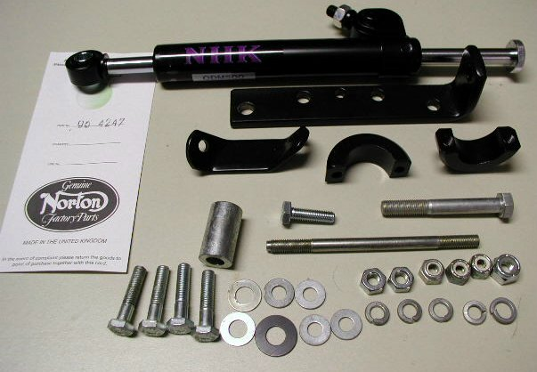
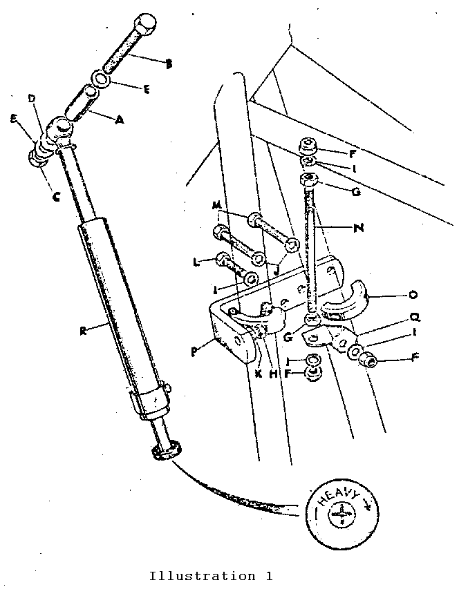
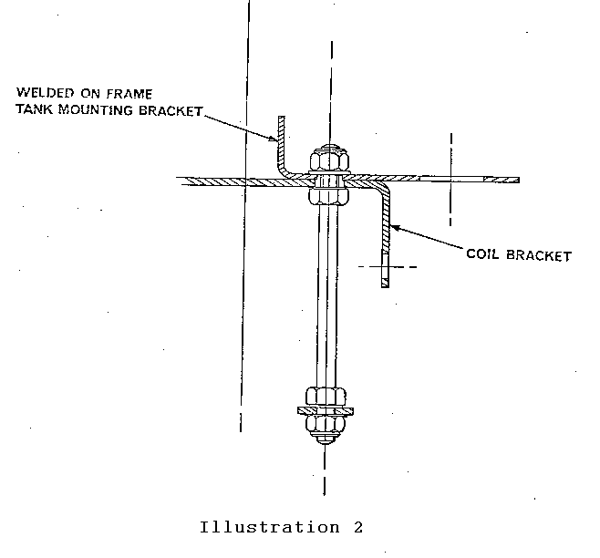
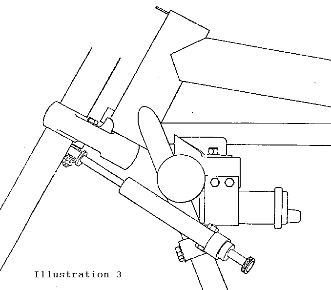
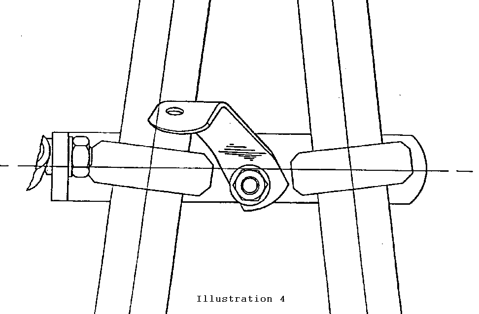

| Plate Ref. | Description | Qty. Inc. | Part No. |
| A | Spacer | 1 | 06-4256 |
| B | Bolt 5/16 x 24, 2 3/8" | 1 | 06-4260 |
| C | Locknut 5/16 x 24 | 1 | 06-3123 |
| D | Nylon Washer | 1 | 06-4259 |
| E | Plain Washer, 5/16 | 2 | 06-7606 |
| F | Locknut, 1/4 x 28 | 3 | 06-0403 |
| G | Nut 1/4 x 28 | 2 | 14-0301 |
| H | Nut, M8 | 1 | M8 |
| I | Plain Washer, 1/4 | 4 | 60-2320 |
| J | Spring Washer, 1/4 | 4 | 60-2427 |
| K | Spring Washer | 1 | 60-2418 |
| L | Bolt 1/4 x 28, .88" | 1 | 06-1798 |
| M | Bolt 1/4 x 28, 1 1/8" | 4 | 06-1344 |
| N | Stud, 1/4 x 28 | 1 | 06-4611 |
| O | Clamp | 2 | 06-4599 |
| P | Bracket | 1 | 06-4607 |
| Q | Locating Bracket | 1 | 06-4606 |
| R | Steering Damper | 1 | 06-4230 |

1. Release the two large knurled knobs and lift the seat clear.
2. Remove the fuse from the battery negative lead.
3. Turn off the fuel, disconnect the fuel lines at the taps, remove the fuel tank securing hardware and lift the tank away.
4. For ease of handling at a later stage, the left side ignition coil can be removed, though this is not essential.
5. Remove the coil bracket-to-frame left hand rear bolt to allow fitting of extended stud 06-4611. See Ill. 2.

6. When fitting stud 06-4611 from beneath, note that the nut beneath the coil bracket may be captive or loose.
7. Loosely assemble nut 14-0301, bracket 06-4606, washer 60-2320 and nut 06-0403 to the lower end of the stud as shown in Ill. 1.
8. Hang steering damper 06-4230 to the end of bracket 06-4607, finger tightening into position with spring washer 60-2418 and nut M8.

9. Hold bracket 06-4607, with steering damper attached, in position across the front of the frame down tubes with the damper at the left
(chaincase) side. Assemble finger tight bolt 06-1798, both washers 60-2320 and locknut 06-0403 to hold brackets 06-4607 and 06-4606 together.
10. Assemble both clamps 06-4599 as shown in Illustrations 1 and 4 securing with bolts 06-1344 and spring washers 60-2427.

11. Place bolt 06-4260 and washer 06-7606 down through the lower fork yoke, place spacer 06-4256 over the bolt followed by the forward eye
of the damper unit and secure by nylon washer 06-4259 plain washer 06-7606 and locknut 06-3123.
12. Final tighten the hardware - on both ends of the long stud to the coil bracket, bracket 06-4606 to 06-4607, clamps 06-4599,
steering damper to bracket 06-4607 and steering damper to fork yoke.
13. Refit the fuel tank and secure; reconnect the fuel lines to the taps.
14. Refit the fuse to the battery negative lead.
15. Refit and secure the seat.
16. Before attempting to ride the motorcycle, ensure that full steering side-to-side movement is available.
Damping is adjustable by turning the knob on the rear end of the damper as marked, that is, heavy clockwise, light anti-clockwise.
Experiment on the stationary machine before moving off.
The steering damper is a sealed unit and in normal usage will give long service without maintenance.
The steering damper kit will be found particularly useful in restricting handling problems occasioned by crosswinds, rutted road surfaces,
grooved freeway surfaces, heavy touring luggage, etc. It is not intended to rectify maladies in handling occasioned by incorrect
maintenance though an improvement even in these undesirable conditions may well be noted.
This page was written and designed by F. H. Eaton & Associates if you have any questions or comments please contact us at info@fheaton.com